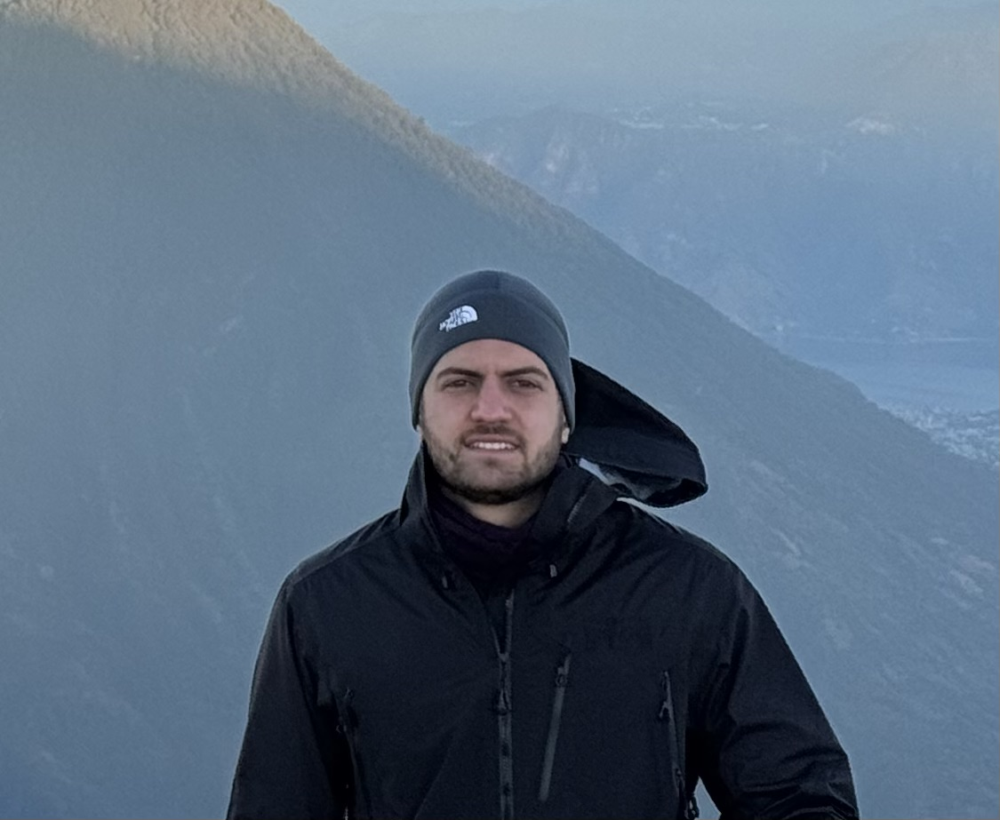

Charlie Ortiz
Relentless Pursuit of Adventure
Data Scientist by day — SWE wannabe by night
Bio
A Guatemalan native, I grew up mountain biking, water skiing, and lost in a good read. I pursued Operations Research at Columbia University and currently work as a Data Scientist at Accenture. Based out of NYC.
Technical Skills
- Python
- SQL
- JavaScript
- Databricks
- Tableau
- Express.js / Django